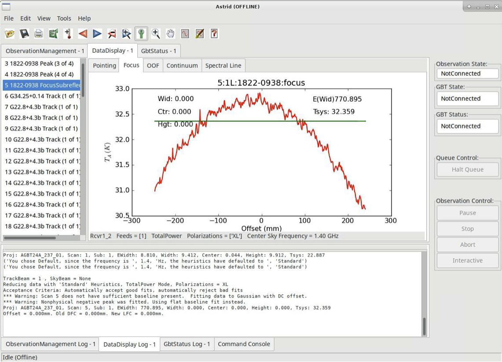
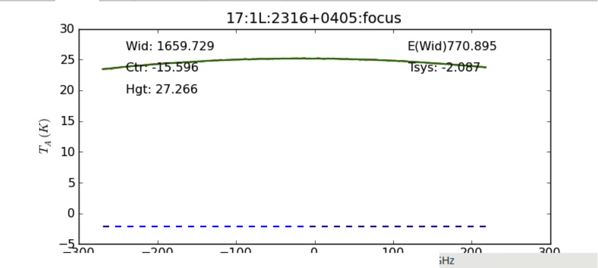
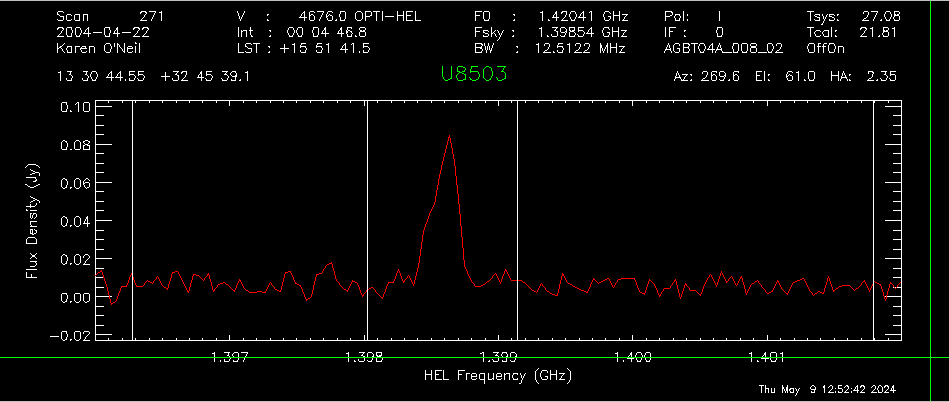
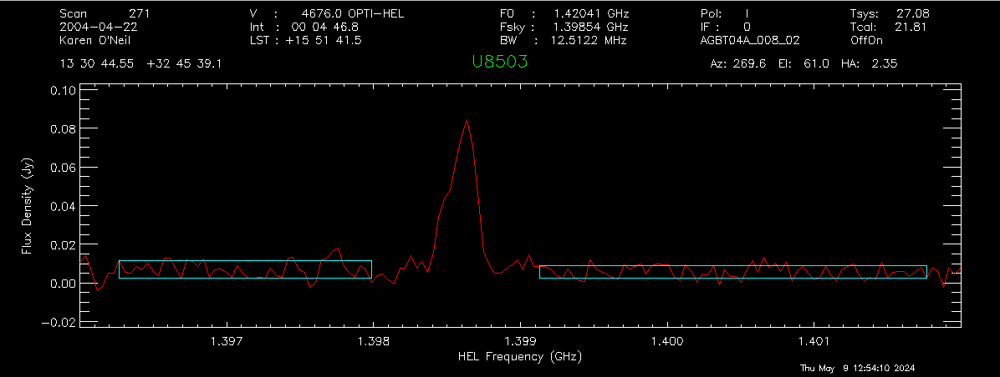
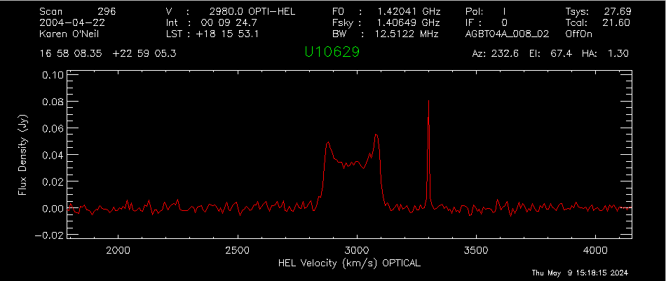

HI Position Switched (psw) Spectrum#
This tutorial will run you through the steps required to setup your scheduling blocks to execute an HI observation using position switching and how to calibrate the data.
What you should already know
In order to complete this tutorial, you need a GBO computing account. You should be relatively familiar with using the command line, and starting AstrID.
Data
This example is from the HI survey dataset http://greenbankobservatory.org/~koneil/HIsurvey/index.shtml
1 Observation Preparation#
The instructions below will run you through the steps required to setup your scheduling blocks to execute an HI pointed observation (using position-switching) and how to calibrate the data.
1.1 Catalog#
Before you start writing your scheduling block(s) it is helpful to prepare a source catalog in a separate file. This is especially advised if you have a long list of sources. For a short catalog it is also possible to add the sources directly in your scheduling block (not described here).
Here is an example of a RA/Dec coordinate system catalog with velocity, showing the header lines of the catalog and then 5 sources. The full catalog is available at /home/astro-util/HIsurvey/HI_survey.cat.
# My source list with radial velocities
format=spherical
coordmode = J2000
HEAD= Name RA Dec VEL
U8249 13:10:26.5 24:55:15.0 2541
U8503 13:30:44.9 32:45:38.0 4676
U8516 13:31:52.5 20:00:01.0 1020
U8896 13:58:38.5 07:12:58.0 4401
U8904 13:58:51.0 26:06:24.0 9773
Here Name is the name of the source (choose a name that uniquely identifies the source in your catalog), RA is the right ascension, Dec is the declination, and VEL is the source velocity in units of km/s.
We advise to save this catalog as a .cat file, in a known location. We will call it later from our scheduling block(s).
Todo
Add link to reference material for catalogs.
1.2 Configuration and Observing Scripts#
At the GBT we use AstrID to prepare and execute scheduling blocks. AstrID is an application that you can use to edit and submit custom python-based scheduling blocks for GBT observations. AstrID is python-based and can incorporate custom user scripts. Here we show the full AstrID script, including reference to the HI catalog and the configurations. The script is available at /home/astro-util/HIsurvey/HI_survey.py
# Reset configuration from prior observations.
ResetConfig()
# Import catalog of flux calibrators and user defined sources.
Catalog(fluxcal) #A catalog of standard flux calibrators known by astrid
Catalog('/home/astro-util/HIsurvey/HI_survey.cat')
# Config for spectral line observations of HI using position switching.
psw_HI_config="""
receiver = 'Rcvr1_2' # L-Band receiver for HI
obstype = 'Spectroscopy' # Spectral line observations
backend = 'VEGAS' # Spectral line backend
restfreq = 1420.4058 # Rest frequency for HI (MHz)
deltafreq = 0.0 # Offsets for each spectral window (MHz)
bandwidth = 23.44 # Defined by chosen VEGAS mode (MHz)
nchan = 32768 # Number of channels in spectral window
vegas.subband = 1 # Single/multiple spectral windows (1 or 8)
swmode = 'tp' # Switching mode: total power with noise diode
swtype = None # Type of switching, no switching
swper = 1.0 # Length of full switching cycle (seconds)
swfreq = 0, 0 # Frequency offset (MHz)
tint = 6.0 # Integration time (s; int. mult. of swper)
vframe = 'lsrk' # Velocity reference frame
vdef = 'Optical' # Doppler-shifted velocity frame
noisecal = 'lo' # Level of the noise diode, 'lo' or 'hi'
pol = 'Linear' # 'Linear' or 'Circular' polarization
notchfilter = 'In' # 'In' to block 1200-1310 MHz RFI signal
"""
#First, lets go to a calibrator source, to check the telescope calibration
#If you are using a prime focus receiver, just use “AutoPeak
AutoPeakFocus('3C286')
# Break, to make sure the AutoPeakFocus looks good; If not, hit No and restart the script
Break('Everything ok?')
#Slew to your source of interest
Slew('U8503')
# If your flux calibrator was far from your source, then
# Perform position and focus correction on nearby calibrator
# Note that this step is often not necessary at low frequencies
AutoPeak()
# Break, to make sure the AutoPeakFocus looks good; If not, hit No and restart the script
Break('Everything ok?')
# Reconfigure after calibrator corrections.
Configure(psw_HI_config)
#Slew back to your source of interest
Slew('U8503')
# Balance the hardware.
Balance()
# Take an ON + OFF scan of the object
# The OFF scan follows the same sky area (Az, El) as the ON
OnOff('U8503', Offset('J2000', '00:05:00', 0.0, cosv=True), 300)
2. Observations#
To learn how to execute your observing scripts, please follow the GBT observations 101 guide.
2.1 AutoPeakFocus observations#
Recall that after slewing near your source, the script looks for a nearby bright point source and runs a series of Peak (pointing) and Focus scans. When everything is working well, the scans look like this (switch to the DataDisplayTab in AstrID to see them).
L-Band peak observations. Four scans are taken, two scanning in Azimuth, two scanning in Elevation.#

L-Band focus observation.#
Warning
Sometimes, though, the focus curve fails to fit properly. This is typically due to the chosen source not having enough power. When this happens, you can look at the results and decide if they are close enough to simply have the operator put the focus offset into the system. This will also be true as long as the peak appears to be at \(-20\pm10\) mm.
A couple examples of this situation are shown below.
 Danger
When you’re online (observing), you should never click on any of the scan numbers. This will cause AstrID to re-process the data and can change your pointing and focus values.
Note
You can always look at your observations after your observing session has ended. Start AstrID in offline mode and then under the DataDisplay Tab, open the ScanLog.fits file in the directory of your observations of interest.
2.2 Source observations#
Once the AutoPeakFocus routines are complete, the telescope should configure for your spectral line observations, go to your source and balance the power, and then observe! You can check the status of your observations using the GBTStatus tab in AstrID.
Note
The DataDisplay - Spectral Line subtab is often not able to keep up with the incoming data, and so issues with not displaying data can be ignored.
Once your first set of data is written to disk (here when the first ON scan is complete, after 5 minutes), you should go into gbtidl and look at the data.
Note
You cannot look at the fully processed spectrum (ON+OFF) in gbtidl until the ON+OFF pair is complete (after about 10.5 minutes). You can, however, look to see that the data looks ok, using gbtidl and the gettp, 5 command (where 5 is the scan number of interest).
More information on data processing in the next section. Happy Observing!
3. Data Reduction#
We will show two examples of how to process the obtained spectra:
Example 2
Many observations were taken with the noise diodes turned off, followed by a short period where the noise diodes are firing. As a result you need to determine \(T_{sys}\) and then apply it to the on+off scans.
3.1 Simple Example#
This simple example is from the HI survey dataset (http://greenbankobservatory.org/~koneil/HIsurvey/index.shtml). It also matches the observation technique in Observing, example 1.
3.1.1 Start gbtidl#
Open a terminal. At the prompt enter
gbtidl
You should see the following welcome screen:
IDL Version 7.1.1 (linux x86_64 m64). (c) 2009, ITT Visual Information Solutions
Installation number: 15269-3.
Licensed for use by: National Radio Astronomy Observatory
Starting GBTIDL
Display Device : X
Visual Class : TrueColor
Visual Depth : 24-Bit
Color Table Size: 256
Number of Colors: 16777216
Decomposed Color: 0
--------------------------------------------------------------------
Welcome to GBTIDL v2.10.1
For news, documentation, enhancement requests, bug tracking,
discussion, and contributions, visit:
http://gbtidl.nrao.edu
For help with a GBTIDL routine from the command line, use
the procedure 'usage'. For example:
usage,'show' ; gives the syntax of the procedure 'show'
usage,'show',/verbose ; gives more information on 'show'
--------------------------------------------------------------------
GBTIDL ->
3.1.2 Load files of interest#
GBTIDL -> dirin, '/home/astro-util/HIsurvey/Session02'
3.1.3 Look at file content#
GBTIDL -> summary
Scan Source Vel Proc Seq RestF nIF nInt nFd Az El
-------------------------------------------------------------------------------
220 3C286 0.0 OffOn 1 1.400 1 6 1 184.6 82.0
221 3C286 0.0 OffOn 2 1.400 1 6 1 186.6 82.0
222 3C286 0.0 OffOn 1 1.400 1 6 1 193.2 81.9
223 3C286 0.0 OffOn 2 1.400 1 6 1 195.1 81.8
224 3C286 0.0 OffOn 1 1.400 1 6 1 195.0 80.3
225 3C286 0.0 OffOn 2 1.400 1 5 1 199.5 81.6
226 3C286 0.0 OffOn 1 1.400 1 6 1 200.3 80.1
227 3C286 0.0 OffOn 2 1.400 1 6 1 205.4 81.3
228 B1328+254 0.0 OffOn 1 1.400 1 6 1 207.2 74.0
229 B1328+254 0.0 OffOn 2 1.400 1 6 1 210.6 75.2
230 B1345+125 0.0 OffOn 1 1.400 1 18 1 192.5 62.1
231 B1345+125 0.0 OffOn 2 1.400 1 18 1 194.9 63.4
244 B1345+125 0.0 OffOn 1 1.400 1 18 1 200.3 61.0
245 B1345+125 0.0 OffOn 2 1.400 1 18 1 202.8 62.2
246 B1345+125 0.0 OffOn 1 1.400 1 18 1 203.7 60.5
247 B1345+125 0.0 OffOn 2 1.400 1 18 1 206.3 61.6
248 B1345+125 0.0 OffOn 1 1.370 1 18 1 207.4 59.8
249 B1345+125 0.0 OffOn 2 1.370 1 18 1 210.1 60.8
250 B1345+125 0.0 Track 1 1.370 1 3 1 215.2 59.6
251 B1345+125 0.0 Track 1 1.370 1 3 1 215.9 59.4
263 U8091 213.0 OffOn 1 1.420 1 30 1 240.5 51.1
264 U8091 213.0 OffOn 2 1.420 1 30 1 240.3 51.2
265 U8091 213.0 Track 1 1.420 1 3 1 243.4 49.4
266 U8249 2541.0 OffOn 1 1.420 1 10 1 241.5 50.4
267 U8249 2541.0 OffOn 1 1.420 1 30 1 242.1 50.1
268 U8249 2541.0 OffOn 2 1.420 1 30 1 241.9 50.2
269 U8249 2541.0 Track 1 1.420 1 3 1 244.9 48.1
270 U8503 4676.0 OffOn 1 1.420 1 30 1 269.8 60.7
271 U8503 4676.0 OffOn 2 1.420 1 30 1 269.6 61.0
272 U8091 213.0 OffOn 1 1.420 1 30 1 253.1 41.9
273 U8091 213.0 OffOn 2 1.420 1 30 1 253.0 42.0
274 U8091 213.0 Track 1 1.420 1 3 1 255.5 39.6
275 U8249 2541.0 OffOn 1 1.420 1 30 1 266.1 47.3
276 U8249 2541.0 OffOn 2 1.420 1 30 1 266.0 47.5
277 U8249 2541.0 Track 1 1.420 1 3 1 267.9 45.2
278 U9965 4524.0 OffOn 1 1.420 1 30 1 220.3 68.0
279 U9965 4524.0 OffOn 2 1.420 1 30 1 219.9 68.1
280 U9965 4524.0 Track 1 1.420 1 3 1 222.8 67.4
281 U10351 891.0 OffOn 1 1.420 1 30 1 219.3 77.8
282 U10351 891.0 OffOn 2 1.420 1 30 1 218.4 77.9
283 U10351 891.0 Track 1 1.420 1 3 1 227.8 76.3
284 U9007 4618.0 OffOn 1 1.420 1 30 1 248.1 38.8
285 U9007 4618.0 OffOn 2 1.420 1 30 1 248.0 38.9
286 U9007 4618.0 Track 1 1.420 1 3 1 250.5 36.7
287 U9007 5257.0 OffOn 1 1.420 1 30 1 233.6 48.4
288 U9007 5257.0 OffOn 2 1.420 1 30 1 233.5 48.5
289 U9803 5257.0 OffOn 1 1.420 1 30 1 264.5 58.5
290 U9803 5257.0 OffOn 2 1.420 1 30 1 264.3 58.7
291 U9803 5257.0 Track 1 1.420 1 3 1 266.5 56.3
292 U10351 891.0 OffOn 1 1.420 1 30 1 251.4 67.5
293 U10351 891.0 OffOn 2 1.420 1 30 1 251.1 67.8
294 U10351 891.0 Track 1 1.420 1 3 1 255.3 65.0
295 U10629 2980.0 OffOn 1 1.420 1 30 1 232.9 67.2
296 U10629 2980.0 OffOn 2 1.420 1 30 1 232.6 67.4
297 U10629 2980.0 OffOn 1 1.420 1 30 1 237.4 65.5
298 U10629 2980.0 OffOn 2 1.420 1 30 1 237.1 65.6
299 U10629 2980.0 Track 1 1.420 1 3 1 241.4 63.6
300 U11017 4644.0 OffOn 1 1.420 1 30 1 234.0 76.6
301 U11017 4644.0 OffOn 2 1.420 1 30 1 233.2 76.8
302 U11017 4644.0 OffOn 1 1.420 1 30 1 240.3 74.8
303 U11017 4644.0 OffOn 2 1.420 1 30 1 239.7 75.0
304 U11017 4644.0 Track 1 1.420 1 3 1 242.6 74.0
305 U11017 4644.0 Track 1 1.420 1 1 1 242.9 73.8
306 U11017 4644.0 Track 1 1.420 1 3 1 246.0 72.6
307 U11461 3122.0 OffOn 1 1.420 1 30 1 166.9 59.8
308 U11461 3122.0 OffOn 2 1.420 1 30 1 166.7 59.8
309 U11461 3122.0 OffOn 1 1.420 1 30 1 172.3 60.2
310 U11461 3122.0 OffOn 2 1.420 1 30 1 172.1 60.2
311 U11461 3122.0 Track 1 1.420 1 3 1 178.0 60.4
312 U11578 4601.0 OffOn 1 1.420 1 30 1 155.3 58.6
313 U11578 4601.0 OffOn 2 1.420 1 30 1 155.1 58.6
314 U11578 4601.0 Track 1 1.420 1 3 1 160.4 59.4
315 U11578 4601.0 Track 1 1.420 1 3 1 160.9 59.5
316 U11627 4864.0 OffOn 1 1.420 1 30 1 156.8 55.2
317 U11627 4864.0 OffOn 2 1.420 1 30 1 156.6 55.1
318 U11627 4864.0 OffOn 1 1.420 1 30 1 161.4 55.9
319 U11627 4864.0 OffOn 2 1.420 1 30 1 161.3 55.9
320 U11627 4864.0 Track 1 1.420 1 3 1 166.7 56.6
321 U11992 3592.0 Track 1 1.420 1 3 1 124.4 54.3
322 U11992 3592.0 OffOn 1 1.420 1 30 1 124.9 54.5
323 U11992 3592.0 OffOn 2 1.420 1 30 1 124.7 54.4
3.1.4 Empty the buffer memory#
Make sure the buffer memory is empty
GBTIDL -> sclear
3.1.5 Process single on+off pair#
3.1.5.1 Process first polarization#
Process the first polarization of the on+off pair (scan #270, 271), setting the intensity unit to Jansky.
GBTIDL --> getps, 270, plnum=0, units='Jy'
3.1.5.2 Adjust x-axis#
Set the x-axis to an interesting frequency:
GBTIDL -> setx, 1.396, 1.402
3.1.5.3 Accumulate results#
Accumulate the results from first polarization in the buffer.
GBTIDL -> accum
3.1.5.4 Process second polarization#
Now process the second polarization of the same on+pff pair (scan #270, 271), again setting the intensity unit to Jansky.
GBTIDL -> getps, 270, plnum=1, units='Jy'
3.1.5.5 Accumulate results#
Accumulate the results from second polarization in the buffer.
GBTIDL -> accum
3.1.5.4 Average polarizations#
GBTIDL -> ave
3.1.6 Smooth the result#
GBTIDL -> gsmooth, 100, /decimate
3.1.7 Fit the baseline#
3.1.7.1 Choose region#
To choose the region for baseline fitting, mark the start and end of the baseline region on either side of the source interactively. Use the left button of your mouse to mark the region and the right button to exit.
GBTIDL -> setregion
This is what the plotter window will look like after marking the basline regions (white vertical lines) while still in interactive more (green crosshair cursor).
This is what the plotter window will look like after exiting the interactive mode. The selected regions are now marked with the cyan rectangular boxes.
3.1.7.2 Set order of baseline fit#
We will use a polynomial baseline fit of order 3.
GBTIDL -> nfit, 3
3.1.7.3 Show the fitted baseline#
GBTIDL -> bshape
3.1.7.4 Subtract the fitted baseline#
GBTIDL -> baseline
3.1.8 Switch the x-axis#
Switch the x-axis from frequency to velocity
GBTIDL -> velo
3.1.9 Determine statistics#
3.1.9.1 RMS#
Determine the statistics in the velocity ranges surrounding the galaxy, i.e. 4000 km/s - 4400 km/s and 4800 km/s - 5200 km/s.
GBTIDL -> stats, 4000, 4400
Chans bchan echan Xmin Xmax Ymin Ymax
49 197 245 4003.4 4400.8 -0.0069890 0.0075569
Mean Median RMS Variance Area
1.9736E-06 0.00027831 0.0034322 1.1780E-05 0.00080165
GBTIDL -> stats, 4800, 5200
Chans bchan echan Xmin Xmax Ymin Ymax
49 101 149 4799.2 5198.7 -0.0087689 0.011331
Mean Median RMS Variance Area
-0.00011646 -0.00080158 0.0043761 1.9150E-05 -0.047555
3.1.9.2 Line properties#
Using the AWV (area, width, velocity) routine, determine the line’s properties, including the velocity width at 20% of the line’s peak velocity.
GBTIDL -> gmeasure, 1, 0.2, brange=4610, erange=4735, rms=0.0039
Area, Width, Velocity (followed by errors in same order) = 3.67 83.31 4677.81 0.22 0.00 0.00
3.1.10 Compare with online database#
Check your results against the online database available here: http://greenbankobservatory.org/~koneil/HIsurvey/index.shtml.
3.2 More Complicated Example#
This example is from the HI survey dataset (http://greenbankobservatory.org/~koneil/HIsurvey/index.shtml).
It also matches the observation technique in Observing, example 1. Note, though, that not all the data in this dataset was taken using the standard ONOFF command with the cals (noise diodes) firing. Instead many of the observations were taken with the noise diodes turned off, followed by a short scan where the noise diodes are firing. As a result you need to determine the Tsys and then apply it to the on+off scans.
3.2.1 Start gbtidl#
Open a terminal. At the prompt enter
gbtidl
You should see the following welcome screen:
IDL Version 7.1.1 (linux x86_64 m64). (c) 2009, ITT Visual Information Solutions
Installation number: 15269-3.
Licensed for use by: National Radio Astronomy Observatory
Starting GBTIDL
Display Device : X
Visual Class : TrueColor
Visual Depth : 24-Bit
Color Table Size: 256
Number of Colors: 16777216
Decomposed Color: 0
--------------------------------------------------------------------
Welcome to GBTIDL v2.10.1
For news, documentation, enhancement requests, bug tracking,
discussion, and contributions, visit:
http://gbtidl.nrao.edu
For help with a GBTIDL routine from the command line, use
the procedure 'usage'. For example:
usage,'show' ; gives the syntax of the procedure 'show'
usage,'show',/verbose ; gives more information on 'show'
--------------------------------------------------------------------
GBTIDL ->
3.2.2 Load files of interest#
GBTIDL -> dirin, '/home/astro-util/HIsurvey/Session02'
3.2.3 Look at file content#
GBTIDL -> summary
Here we’re showing only the scans of interest for this example. We have two OffOn pairs (scans pairs 295+296, 297+298) and one track scan (scan 299).
Scan Source Vel Proc Seq RestF nIF nInt nFd Az El
295 U10629 2980.0 OffOn 1 1.420 1 30 1 232.9 67.2
296 U10629 2980.0 OffOn 2 1.420 1 30 1 232.6 67.4
297 U10629 2980.0 OffOn 1 1.420 1 30 1 237.4 65.5
298 U10629 2980.0 OffOn 2 1.420 1 30 1 237.1 65.6
299 U10629 2980.0 Track 1 1.420 1 3 1 241.4 63.6
3.2.4 Double-check the scans#
GBTIDL -> list, scan=295
Here you can see that there is no noise diode (cal) firing during the on + off scans. We’re only showing the first few lines of the output, when you run the command, the output list will be a bit longer.
#INDEX SOURCE SCAN PROCEDURE POL IFNUM FDNUM INT SIG CAL
2472 U10629 295 OffOn XX 0 0 0 T F
2473 U10629 295 OffOn YY 0 0 0 T F
2474 U10629 295 OffOn XX 0 0 1 T F
2475 U10629 295 OffOn YY 0 0 1 T F
2476 U10629 295 OffOn XX 0 0 2 T F
2477 U10629 295 OffOn YY 0 0 2 T F
2478 U10629 295 OffOn XX 0 0 3 T F
2479 U10629 295 OffOn YY 0 0 3 T F
2480 U10629 295 OffOn XX 0 0 4 T F
2481 U10629 295 OffOn YY 0 0 4 T F
GBTIDL -> list, scan=296
#INDEX SOURCE SCAN PROCEDURE POL IFNUM FDNUM INT SIG CAL
2532 U10629 296 OffOn XX 0 0 0 T F
2533 U10629 296 OffOn YY 0 0 0 T F
2534 U10629 296 OffOn XX 0 0 1 T F
2535 U10629 296 OffOn YY 0 0 1 T F
2536 U10629 296 OffOn XX 0 0 2 T F
2537 U10629 296 OffOn YY 0 0 2 T F
2538 U10629 296 OffOn XX 0 0 3 T F
2539 U10629 296 OffOn YY 0 0 3 T F
2540 U10629 296 OffOn XX 0 0 4 T F
2541 U10629 296 OffOn YY 0 0 4 T F
GBTIDL -> list, scan=299
#INDEX SOURCE SCAN PROCEDURE POL IFNUM FDNUM INT SIG CAL
2712 U10629 299 Track XX 0 0 0 T T
2713 U10629 299 Track XX 0 0 0 T F
2714 U10629 299 Track YY 0 0 0 T T
2715 U10629 299 Track YY 0 0 0 T F
2716 U10629 299 Track XX 0 0 1 T T
2717 U10629 299 Track XX 0 0 1 T F
2718 U10629 299 Track YY 0 0 1 T T
2719 U10629 299 Track YY 0 0 1 T F
2720 U10629 299 Track XX 0 0 2 T T
2721 U10629 299 Track XX 0 0 2 T F
2722 U10629 299 Track YY 0 0 2 T T
2723 U10629 299 Track YY 0 0 2 T F
3.2.5 Determine \(T_{sys}\)#
We will use the track scan (scan 299) to determine the system temperature, \(T_{sys}\) for each polarization.
GBTIDL -> gettp, 299, plnum=0
Scan: 299 (IF:0 FD:0 PL:0) Tsys: 27.98
GBTIDL -> gettp, 299, plnum=1
Scan: 299 (IF:0 FD:0 PL:1) Tsys: 27.40
3.2.6 Empty the buffer memory#
Make sure the buffer memory is empty
GBTIDL -> sclear
3.2.7 Process on+off pairs#
Here you have to use the getsigref command, and explicitly give the command the on and off scan numbers.
GBTIDL -> getsigref, 296, 295, plnum=0, tsys=27.98, unit='Jy'
SigScan: 296 RefScan: 295 (IF:0 FD:0 PL:0) units: Jy tau:0.008 ap_eff:0.710 Tsys: 27.98
GBTIDL -> accum
GBTIDL -> getsigref, 296, 295, plnum=1, tsys=27.40, unit='Jy'
Blanked spectra: ignored 2 integrations
SigScan: 296 RefScan: 295 (IF:0 FD:0 PL:1) units: Jy tau:0.008 ap_eff:0.710 Tsys: 27.40
GBTIDL -> accum
GBTIDL -> getsigref, 298, 297, plnum=0, tsys=27.98, unit='Jy'
SigScan: 298 RefScan: 297 (IF:0 FD:0 PL:0) units: Jy tau:0.008 ap_eff:0.710 Tsys: 27.98
GBTIDL -> accum
GBTIDL -> getsigref, 298, 297, plnum=0, tsys=27.40, unit='Jy'
SigScan: 298 RefScan: 297 (IF:0 FD:0 PL:1) units: Jy tau:0.008 ap_eff:0.710 Tsys: 27.40
GBTIDL -> accum
GBTIDL -> ave

3.2.8 Adjust x-axis#
Set the x-axis to avoid the edges.
GBTIDL -> setx, 1.401, 1.412
3.2.9 Smooth the spectrum#
GBTIDL -> gsmooth, 100, /decimate

3.2.10 Remove baseline#
Set regions avoiding the RFI spike.
GBTIDL -> setregion
Remove baseline (after inspection) using first order polynomial (i.e. a line).
GBTIDL -> nfit, 1
GBTIDL -> bshape
GBTIDL -> baseline
3.2.11 Determine statistics#
3.2.11.1 RMS noise#
Determine the statistics in the velocity ranges surrounding the galaxy, i.e. 2000 km/s - 2500 km/s and 3500 km/s - 4000 km/s.
GBTIDL -> stats, 2000, 2500
Chans bchan echan Xmin Xmax Ymin Ymax
63 222 284 1996.4 2503.1 -0.0050648 0.0063588
Mean Median RMS Variance Area
0.00022812 0.00011783 0.0025809 6.6610E-06 0.11764
GBTIDL -> stats, 3500, 4000
Chans bchan echan Xmin Xmax Ymin Ymax
62 40 101 3496.8 4000.3 -0.0062628 0.0065100
Mean Median RMS Variance Area
-3.3634E-05 -0.00021309 0.0024638 6.0704E-06 -0.017239
3.2.11.2 Line properties#
Using the AWV (area, width, velocity) routine, we can determine the line’s properties, including the velocity width at 20% of the line’s peak velocity. Here we will use a few methods:
- Fraction of mean
As a fraction of the mean within the region of interest. The mean of data from brange through erange is calculated. The edges are then those locations where the data values are greater than fract*mean for 3 consecutive channels starting from the end points of the region of interest and searching towards the center (method #1), first using 50% of the peak intensity and then 20%
GBTIDL -> gmeasure, 1, 0.5, brange=2815, erange=3142, rms=0.00252
Area, Width, Velocity (followed by errors in same order) = 9.45 252.76 2979.57 0.27 0.00 0.00
GBTIDL -> gmeasure, 1, 0.2, brange=2815, erange=3142, rms=0.00252
Area, Width, Velocity (followed by errors in same order) = 9.45 277.50 2974.64 0.26 0.00 0.00
- Fraction of maximum value
As a fraction of the maximum value within the region of interest. The peak of data from brange to erange is found. The edges are then those locations where the data values are greater than fract*(peak-rms) for 3 consecutive channels starting from the end points of the region of interest and searching towards the center (method #2) , first using 50% of the peak intensity and then 20%.
GBTIDL -> gmeasure, 2, 0.5, brange=2815, erange=3142, rms=0.00252
Area, Width, Velocity (followed by errors in same order) = 9.45 238.38 2980.15 0.26 0.00 0.00
GBTIDL -> gmeasure, 2, 0.2, brange=2815, erange=3142, rms=0.00252
Area, Width, Velocity (followed by errors in same order) = 9.45 258.82 2979.04 0.25 0.00 0.00
- Fraction of each of two peaks – identified by user
You use the cursor to mark two peaks in the region of interest or those peaks are identified through the lefthorn and righthorn parameters. The maximum value within 10 channels of each user-supplied peak location is found. The left edge is where the data value falls below fract*(peak-rms) for 3 consecutive channels searched from the location of the peak. The right-channel peak is similarly used to find the right edge (method #3) , first using 50% of the peak intensity and then 20%.
GBTIDL -> gmeasure, 3, 0.5, brange=2815, erange=3142, rms=0.00252
click on the positions for the two peaks Area, Width, Velocity (followed by errors in same order) = 9.49 239.90 2979.39 0.26 0.00 0.00
GBTIDL -> gmeasure, 3, 0.2, brange=2815, erange=3142, rms=0.00252
click on the positions for the two peaks Area, Width, Velocity (followed by errors in same order) = 9.49 259.96 2978.47 0.25 0.00 0.00
4. Data Reduction - scripted#
This example is from the HI survey dataset (http://greenbankobservatory.org/~koneil/HIsurvey/index.shtml).
You can download the example script shown below here:
HI_survey_process.pro
; Step 3.2.2
dirin,'/home/astro-util/HIsurvey/Session02'
jnk='jnk' ; this is used later, to pause the observations
freeze ; keep from plotting on the screen, to speed up the processing
; skipping steps 3.2.3, and 3.2.4 since you are running a script you should already understand your dataset.
; Steps 3.2.5 here we are running the commands quietly, and then
; getting the tsys values from the !g structure.
gettp,299,plnum=0, /quiet
tsys0=!g.s.tsys
gettp,299,plnum=1, /quiet
tsys1=!g.s.tsys
;Step 3.2.6 - clear the buffer
sclear
;Step 3.2.7; Here wer are going to loop over the scans of interest.
;Because this is a text file, we are using the $& at the end, to continue the lines
;appropriately. Again this is being run quietly
for i=295,297,2 do begin &$ ; scan numbers
for p=0,1 do begin &$ ; polarizzation numbers
if (p eq 0) then tsys=tsys0[0] else tsys=tsys1[0] &$
getsigref,i+1,i,plnum=p,tsys=tsys,unit='Jy', /quiet &$
accum &$
endfor &$
endfor
ave
; Step 3.2.8 - fix the x-axis
setxunit,'GHz' ; make sure we have the expected units in the x-axis.
setx,1.401,1.412
; Step 3.2.9 - smooth the data to the desired resolution
gsmooth,100,/decimate
show
unfreeze
; Step 3.2.10 - Remove baseline
; set region - Here we are going to avoid clicking on the screen and set the regions for the
; baseline fitting
region=[1.402, 1.4045, 1.40506, 1.4054, 1.4072, 1.4115]
reg1=xtochan(region)
Nregion,reg1
nfit,1
bshape
; this pauses the observations, to see the baseline shape
; this is only needed if this script is being read into gbtidl as a whole.
read,jnk,prompt='Push return to continue: '
;remove the baseline
baseline ; removes the baseline
; Step 3.2.11.1: determine (and print) the rms noise
velo
stats,2000,2500, ret=mystats
rms1 = mystats.rms
stats,3500,4000, ret=mystats
rms2 = mystats.rms
rms = (rms1 + rms2) / 2
; Step 3.2.11.2: determine the galaxy's mean intensity using method 1, and calculating the 20% and 50% velocity widths
gmeasure,1, 0.5,brange=2815,erange=3142,rms=rms
gmeasure,1, 0.2,brange=2815,erange=3142,rms=rms
- Let’s say you have the script saved as HI_survey_process.pro. You can execute the script doing the following
in a regular terminal
gbtidl
GBTIDL -> @HI_survey_process.pro
Once done you should see this output from the code:
% ACCUMAVE: Average of : 4 spectra
Push return to continue:
% Program caused arithmetic error: Floating divide by 0
Chans bchan echan Xmin Xmax Ymin Ymax
63 222 284 1996.4 2503.1 -0.0052186 0.0062189
Mean Median RMS Variance Area
8.7379E-05 -4.4913E-05 0.0025822 6.6675E-06 0.045062
Chans bchan echan Xmin Xmax Ymin Ymax
62 40 101 3496.8 4000.3 -0.0062437 0.0065244
Mean Median RMS Variance Area
-1.8582E-06 -0.00018846 0.0024669 6.0857E-06 -0.00095242
Area, Width, Velocity (followed by errors in same order) = 9.43 252.71 2979.58 0.27 0.00 0.00
Area, Width, Velocity (followed by errors in same order) = 9.43 277.39 2974.65 0.26 0.00 0.00
As well as this spectrum in the GBTIDL Plotter (separate window)
